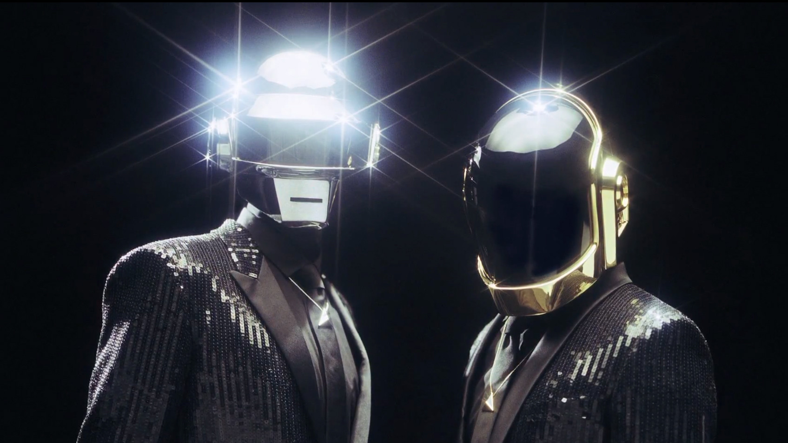
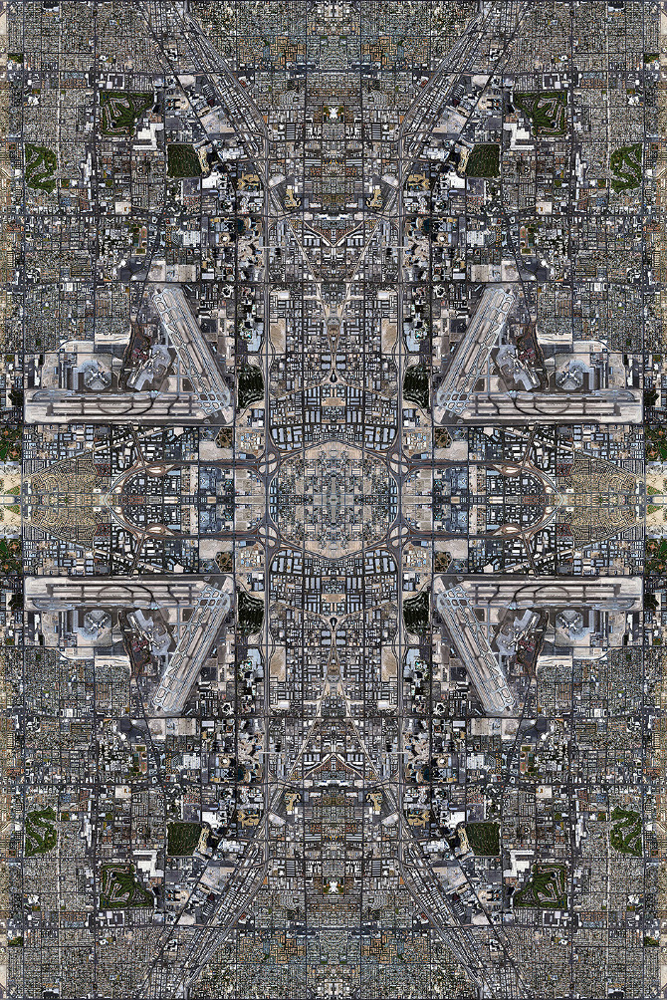

Daft Punk are set to return this month with their 4th studio album "Random Access Memories". After being away for nearly 8 years since "Human After All" The robots have been doing a mixture of touring, recording, remixing, and taking time off.
This Album contains numerous duets with stars of the music industry from, funk, jazz all the way to elctro and hip hop. When collaborator Pharrell Williams was asked to explain the style of music this album will leaning towards. he simply declared, "Earth Music". Wow Pharrell..... that narrows it down.
Daft Punk - Random Access Memories tracklist:
Random Access Memories is set to hit digital downloads on May 21st 2013.
Queens of the Stone Age have announced the title of their long-awaited sixth album: ...Like Clockwork, according to Antiquiet. The desert rock OGs have also updated their website to include the new artwork above, the word "June," and a series of sound snippets presumably sourced from the new long-player. To hear those, visit the QOTSA site, click the image, hit refresh, repeat.
The website also contains another bit of hidden information. Users who click around on the page will eventually find a Matador Records logo, suggesting that the band has signed with the indie powerhouse for this release. Their ferociously good last album, 2007's Era Vulgaris, was released on Interscope, as were the sludge-shoveling masterpieces that preceded it (word to Songs for the Deaf).
Antiquiet claims that "more news is on the way," including the big reveal of the band's new touring drummer. Of course, it was SPIN cover star Dave Grohl who actually played on ...Like Clockwork. We've also learned of contributions from Elton John, Trent Reznor, Jake Shears, Mark Lanegan, and Nick Oliveri. Of late, Josh Homme has been dropping cryptic messages about the anticipated album.
Josh Homme enjoying a beer at Lollapalooza last week. enjoy Josh, enjoy.
South Korean pop sensation Psy released his new single ‘Gentleman’ over the weekend. Media reviews have been not that favorable so far, but the YouTube count tells a story of its own with over 80 million views. It has already broken records, with over 50 million views in the first 40 hours.
I personally noticed how some people, though saying they were bit disappointed, were sharing lots of Psy-related articles on social media. Another mega-hit is a tall order, of course, but it is addictive enough to keep everyone talking and hitting play multiple times. Well done, Psy. He has delivered again despite enormous pressure.
PSY and co. setting a new dance trend maybe?
From his debut back in 2001, Psy has kept his color and uniqueness– his songs, mostly electro, club music, were always racy, explicit, yet fun to the point that most of his songs were labeled as “inappropriate for young audience”!
Photographic artist David Thomas Smith used Google Maps screengrabs to create Anthropocene -- a set of woven rug-inspired artworks from satellite imagery.
Each finished piece brings together thousands of thumbnail images from Google's mapping software in Photoshop to form a complex pattern which references human impact on the landscape.
The idea of reflecting on humanity's relationship with the environment is also picked up in the name of the series, Anthropocene being the informal term coined for the the effects of human interaction on the current geological period.
David Thomas Smith graduated from the University of Wales, Newport with a BA (Hons) in Documentary Photography.
Las Vegas, NV, United States of America